CARTA TECNICA DI PALERMO (OMIRA )
Data:1935-1937 scala: 1:5000
Supporto e tecnica di riproduzione: digitale numero fogli: 17
Descrizione: cartografia realizzata col metodo aerofotogrammetrico “Nistri” dallaSoc. An. Ottico Meccanica Italiana e Rilevamenti Aerofotogrammetrici (O.M.I.R.A.) diRoma; committente è il Comune di Palermo che detiene le tavole originali a colori. L’orografia è rappresentata mediante curvedi livello (equidistanza m 5) e punti quotati. Il sistema cartesiano di riferimento è di tipo locale ed ha come origine il punto trigono-metrico di 2° ordine “La Martorana” dipiazza Bellini.
Dal libro Repertorio cartografico & aerofotografico - CRICD Palermo 01/03/2010
Bibliografia:
REPERTORIO CARTOGRAFICO E AEROFOTOGRAFICO
CRicd - Centro regionale per l'iventario, la catalogazione e la documentazione dei beni culturali e ambientali.
Servizio Documentazione - Unità Operativa X - Aerofototeca
Stampa:
Priulla, Palermo 2010
Qui trovi il file pdf del libro Repertorio cartografico & aerofotografico - CRICD Palermo 01/03/2010
Quadro unione tavole al 5000
| 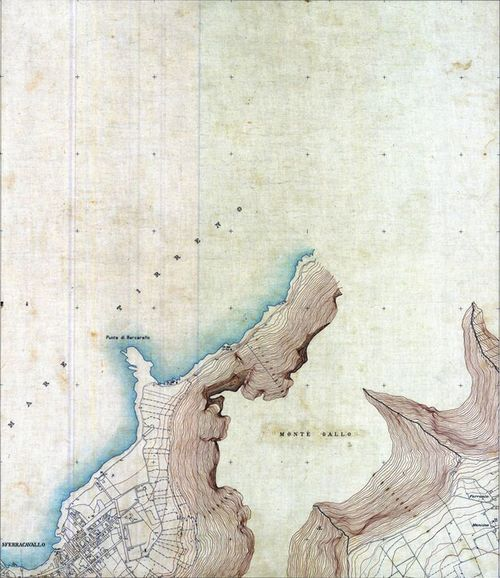 | 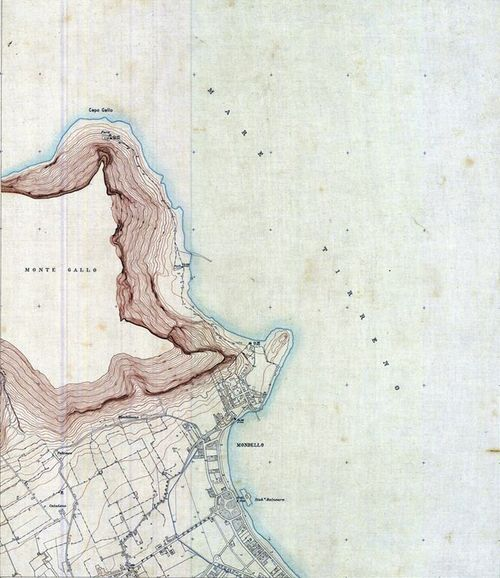 | |||
|---|---|---|---|---|
| 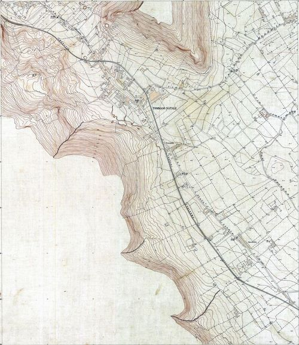 | 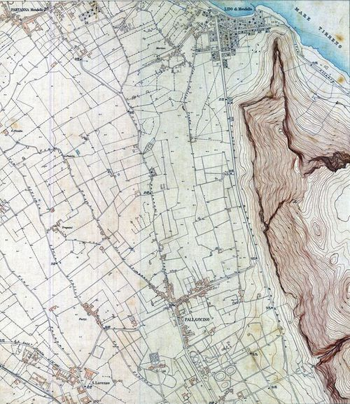 | 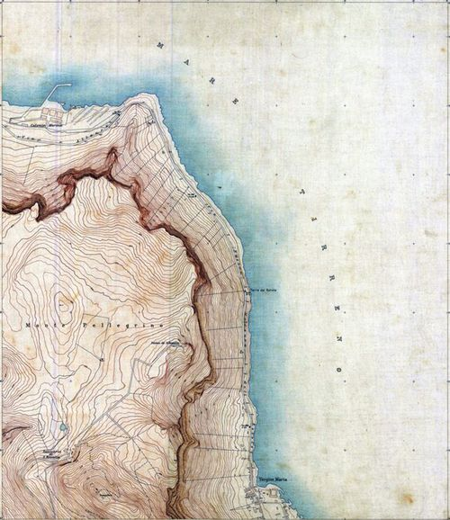 | ||
| 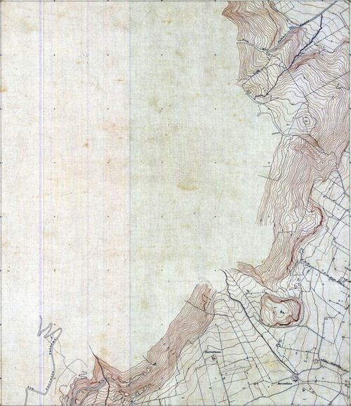 | 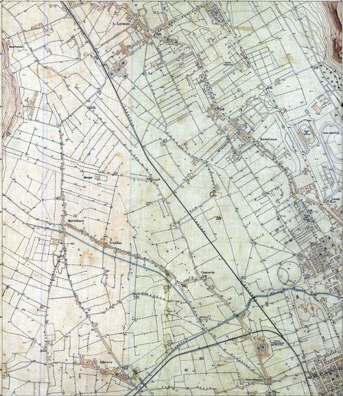 | 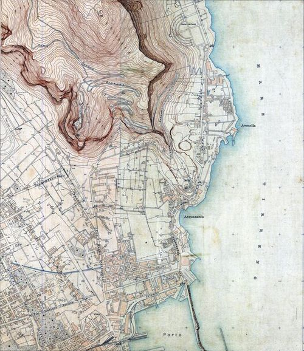 | ||
| 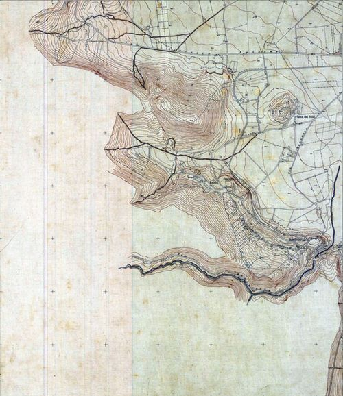 | 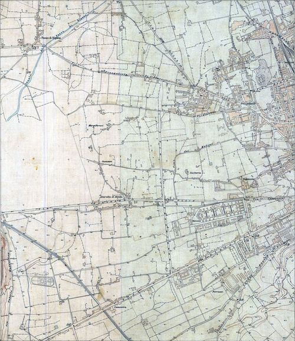 | 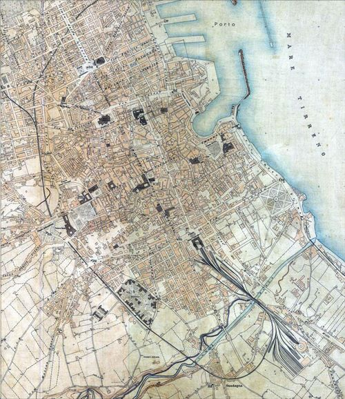 | 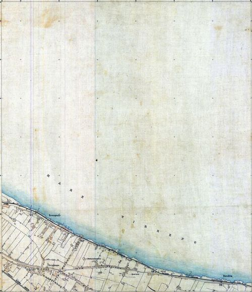 | |
| 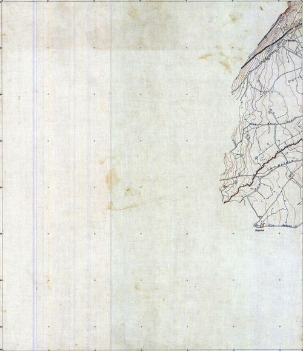 | 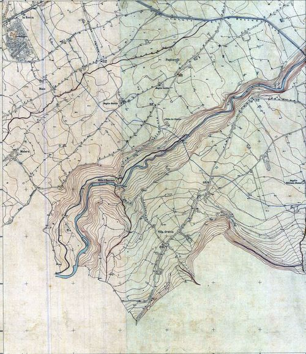 | 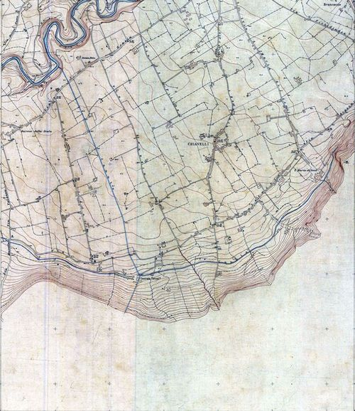 | 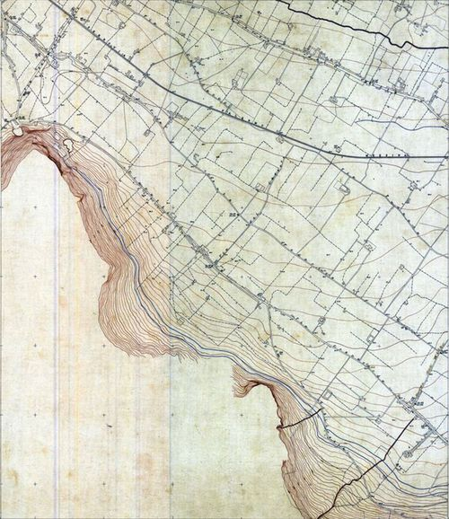 | 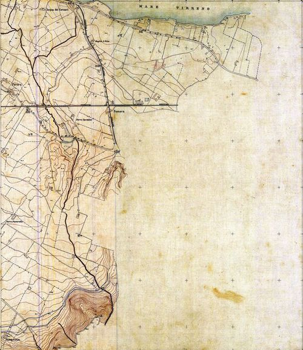 |
I principali strumenti usati per realizzare questa semplice mappa: